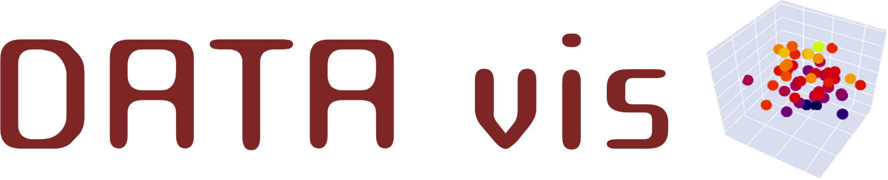
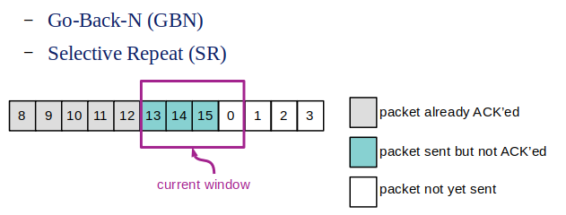

Tools and Resources
 https://datavis.streamlit.app
DATA vis is a Streamlit app I've created to visualize multi-dimensional data samples, particularly for black-box optimization problems. It also allows the user to build and visualize meta-models as 3D slices of multi-dimensional functions.
 Lab: Design, Simulate and Play with simple Reliable Data Transfer Protocols
Lab: Design, Simulate and Play with simple Reliable Data Transfer Protocols
This is a programming-based lab I've designed using Python's SimPy library to design, simulate and play with Reliable Data Transfer Protocols. This lab is a part of the Computer Networks course at IIT Goa. Lab: Sliding Window Protocols
This is a programming-based lab that uses Sliding Window Protocols. (follow up to the lab above)
 WAGS: Welfare and Guidance for Strays
WAGS: Welfare and Guidance for Strays
WAGS is an Android app for Stray Animal Welfare developed by a student team at IIT Goa.
Projects
Sitar (Simulation Tool for Architectural Research)
[Project Webpage]
Sitar is a framework for modeling and simulation of discrete-time systems (such as discrete time queues, computer networks and computer architectural models). It consists of a system description language and a cycle-based simulation kernel. The language allows a system to be described in a hierarchical manner as an interconnection of modules running concurrently. The behavior of each module can be described in an imperative manner using constructs such as time-delays, conditional wait statements, fork-join concurrency, and branch/loop constructs. C++ code can be embedded in a module description in a straightforward and well-defined manner. The sitar language parser has been written using Antlr V3. The simulation kernel is lightweight, consisting of a small set of C++ classes, and has been parallelized using OpenMP.
(2010-2012)
A Framework for Simulation of the Device Layer in Smart City IoT Stacks
This is an ongoing project at RBCCPS (IISc Bangalore) with the aim of developing a scalable and flexible framework for the simulation of the device layer in smart-city applications.
(August 2018 - present)
Discrete-event modeling for Industrial IoT applications
As a part of an Energy-efficient assembly lines project at RBCCPS, my work involves building simulation models of the assembly line for prediction, optimization and real-time monitoring in an industrial Internet-of-Things framework. An open-source simulator for an SMT-PCB assembly line with GUI support, developed as a part of this project is available here.
PI: Prof. Rajesh Sundaresan, IISc Bangalore
(August 2017 - August 2018)